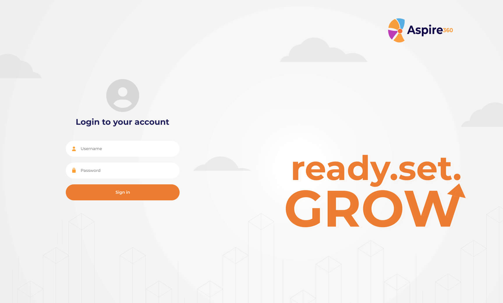
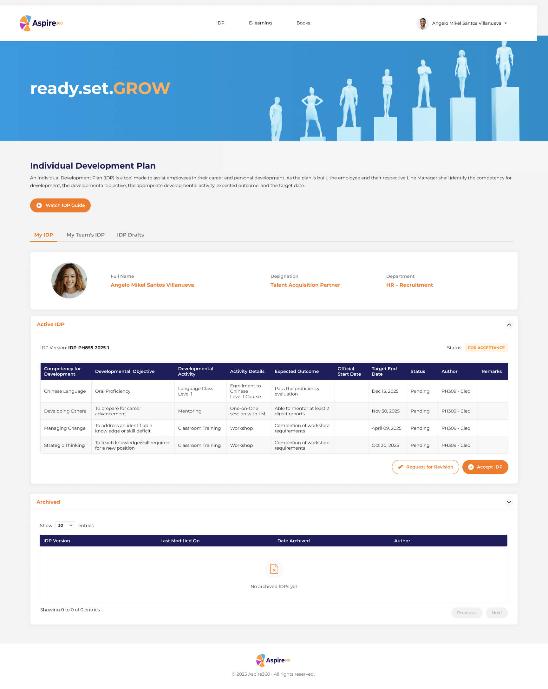

Aspire360 — Individual Dev Plan
An employee development platform built around the IDP cycle — enabling staff to set competency goals, track developmental activities, and receive manager acceptance or revision feedback, all in one structured workflow.
Making employee growth visible and structured
Employees and managers relied on paper-based IDP forms and email threads to track development goals. There was no single place to log competencies, monitor activity progress, or manage the acceptance cycle — making it nearly impossible for HR to get a clear picture of team growth.
I designed Aspire360 to bring the full IDP lifecycle into one platform — from goal creation and developmental activities to manager review, acceptance, and archiving.

Login — split-panel with the "ready.set.GROW" brand message and clean sign-in form

My IDP — employee profile, active IDP table with competency targets, developmental activities, expected outcomes, and status — with Accept IDP and Request for Revision actions
What I designed
My IDP
Employee-facing IDP view — competency goals, developmental activities, expected outcomes, official start and target end dates, and current status per entry.
My Team's IDP
Manager view of all direct reports' active IDPs — enabling line managers to review, accept, or request revisions on submitted development plans.
IDP Drafts
Draft management for employees building their IDP — save in-progress plans before submitting for manager review and acceptance.
Accept / Revise Workflow
Structured approval flow — managers can accept the IDP or request revision with feedback, keeping the development cycle moving with accountability.
Archived IDPs
Historical IDP archive per employee — past versions with last modified dates, archive dates, and authors for full development history tracking.
E-Learning & Books
Integrated learning resource sections supporting developmental activities — connecting IDP goals to available learning content within the platform.
Development that's visible, structured, and owned
Aspire360 gave employees a clear, structured way to own their growth — and gave managers and HR a transparent view of team development progress. The acceptance workflow replaced email back-and-forth, and the archive gave HR a reliable history of every employee's IDP cycle.